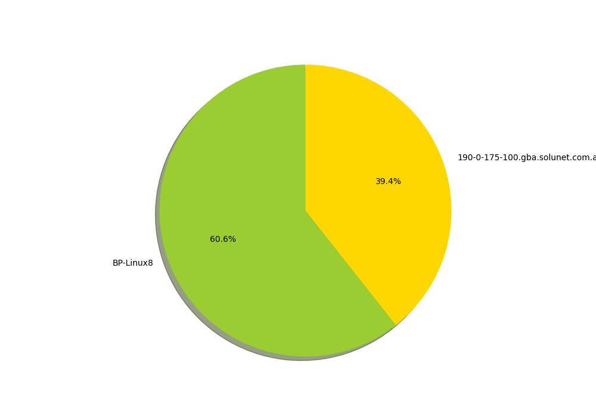

<h1><strong><em>Résultats Brut analyse du trafic</em></strong></h1>
<p><strong><em>Nombre de trames :</em></strong> 11016</p>
<h2><strong><em>adresses IP :</em></strong></h2>
<ul>
<li>BP-Linux8.ssh : 61 requêtes</li>
<li>192.168.190 : 127 requêtes</li>
<li>192.168.190.130 : 67 requêtes</li>
<li>BP-Linux8 : 3034 requêtes</li>
<li>130.190.168 : 2 requêtes</li>
<li>ns1.lan.rt.domain : 84 requêtes</li>
<li>184.107.43 : 2002 requêtes</li>
<li>190-0-175-100.gba.solunet.com.ar : 1970 requêtes</li>
<li>190-0-175-100.gba.solunet.com.ar.mon : 2 requêtes</li>
<li>190-0-175-100.gba.solunet.com.ar.zebrasrv : 2 requêtes</li>
<li>190-0-175-100.gba.solunet.com.ar.zebra : 2 requêtes</li>
<li>190-0-175-100.gba.solunet.com.ar.ripd : 2 requêtes</li>
<li>190-0-175-100.gba.solunet.com.ar.ripngd : 2 requêtes</li>
<li>190-0-175-100.gba.solunet.com.ar.ospfd : 2 requêtes</li>
<li>190-0-175-100.gba.solunet.com.ar.bgpd : 2 requêtes</li>
<li>190-0-175-100.gba.solunet.com.ar.ospf6d : 2 requêtes</li>
<li>190-0-175-100.gba.solunet.com.ar.ospfapi : 2 requêtes</li>
<li>190-0-175-100.gba.solunet.com.ar.isisd : 2 requêtes</li>
<li>190-0-175-100.gba.solunet.com.ar.dict : 2 requêtes</li>
<li>190-0-175-100.gba.solunet.com.ar.f5-globalsite : 2 requêtes</li>
<li>190-0-175-100.gba.solunet.com.ar.gsiftp : 2 requêtes</li>
<li>190-0-175-100.gba.solunet.com.ar.gpsd : 2 requêtes</li>
<li>190-0-175-100.gba.solunet.com.ar.afbackup : 2 requêtes</li>
<li>190-0-175-100.gba.solunet.com.ar.afmbackup : 2 requêtes</li>
<li>190-0-175-100.gba.solunet.com.ar.gds-db : 2 requêtes</li>
<li>190-0-175-100.gba.solunet.com.ar.icpv2 : 2 requêtes</li>
<li>12.250.250 : 2 requêtes</li>
<li>74.43.107 : 2 requêtes</li>
<li>190-0-175-100.gba.solunet.com.ar.iscsi-target : 2 requêtes</li>
<li>190-0-175-100.gba.solunet.com.ar.mysql : 2 requêtes</li>
<li>190-0-175-100.gba.solunet.com.ar.nut : 2 requêtes</li>
<li>190-0-175-100.gba.solunet.com.ar.distcc : 2 requêtes</li>
<li>190-0-175-100.gba.solunet.com.ar.daap : 2 requêtes</li>
<li>190-0-175-100.gba.solunet.com.ar.svn : 2 requêtes</li>
<li>190-0-175-100.gba.solunet.com.ar.suucp : 2 requêtes</li>
<li>190-0-175-100.gba.solunet.com.ar.sysrqd : 2 requêtes</li>
<li>190-0-175-100.gba.solunet.com.ar.sieve : 2 requêtes</li>
<li>190-0-175-100.gba.solunet.com.ar.xtell : 2 requêtes</li>
<li>190-0-175-100.gba.solunet.com.ar.f5-iquery : 2 requêtes</li>
<li>190-0-175-100.gba.solunet.com.ar.epmd : 2 requêtes</li>
<li>190-0-175-100.gba.solunet.com.ar.remctl : 2 requêtes</li>
<li>100.175.0 : 2 requêtes</li>
<li>par21s05-in-f131.1e100.net.http : 28 requêtes</li>
<li>131.204.58 : 2 requêtes</li>
<li>34.107.221 : 2 requêtes</li>
<li>82.221.107 : 14 requêtes</li>
<li>82.221.107.34.bc.googleusercontent.com.http : 6 requêtes</li>
<li>35.244.181 : 2 requêtes</li>
<li>201.181.244 : 33 requêtes</li>
<li>201.181.244.35.bc.googleusercontent.com.https : 15 requêtes</li>
<li>93.184.220 : 13 requêtes</li>
<li>93.184.220.29.http : 7 requêtes</li>
<li>29.220.184 : 2 requêtes</li>
<li>server-54-230-114-7.mrs52.r.cloudfront.net.https : 6 requêtes</li>
<li>7.114.230 : 2 requêtes</li>
<li>ec2-35-166-112-194.us-west-2.compute.amazonaws.com.https : 3 requêtes</li>
<li>192.168.115 : 127 requêtes</li>
<li>194.112.166 : 2 requêtes</li>
<li>server-54-230-114-73.mrs52.r.cloudfront.net.https : 6 requêtes</li>
<li>ec2-34-211-70-226.us-west-2.compute.amazonaws.com.https : 3 requêtes</li>
<li>1.115.168 : 2 requêtes</li>
<li>server-54-230-114-122.mrs52.r.cloudfront.net.https : 3 requêtes</li>
<li>73.114.230 : 2 requêtes</li>
<li>226.70.211 : 2 requêtes</li>
<li>122.114.230 : 2 requêtes</li>
<li>216.58.213 : 3 requêtes</li>
<li>par21s04-in-f4.1e100.net.https : 224 requêtes</li>
<li>172.217.18 : 2 requêtes</li>
<li>par10s38-in-f3.1e100.net.https : 828 requêtes</li>
<li>164.213.58 : 2 requêtes</li>
<li>195.18.217 : 2 requêtes</li>
<li>par21s23-in-f3.1e100.net.https : 252 requêtes</li>
<li>163.201.250 : 2 requêtes</li>
<li>par21s20-in-f2.1e100.net.https : 11 requêtes</li>
<li>par21s23-in-f2.1e100.net.https : 9 requêtes</li>
<li>lhr25s01-in-f2.1e100.net.https : 11 requêtes</li>
<li>98.179.250 : 2 requêtes</li>
<li>162.201.250 : 2 requêtes</li>
<li>66.213.58 : 2 requêtes</li>
<li>par21s11-in-f14.1e100.net.https : 23 requêtes</li>
<li>216.58.215 : 3 requêtes</li>
<li>par21s17-in-f1.1e100.net.https : 181 requêtes</li>
<li>216.58.204 : 2 requêtes</li>
<li>238.19.217 : 2 requêtes</li>
<li>33.215.58 : 2 requêtes</li>
<li>par21s22-in-f14.1e100.net.https : 3 requêtes</li>
<li>mad01s26-in-f174.1e100.net.https : 3 requêtes</li>
<li>par10s40-in-f14.1e100.net.https : 3 requêtes</li>
<li>par21s12-in-f14.1e100.net.https : 3 requêtes</li>
<li>142.178.250 : 2 requêtes</li>
<li>174.214.58 : 2 requêtes</li>
<li>238.74.250 : 2 requêtes</li>
<li>142.22.217 : 2 requêtes</li>
<li>142.250.201 : 4 requêtes</li>
<li>par21s18-in-f3.1e100.net.https : 20 requêtes</li>
<li>67.213.58 : 2 requêtes</li>
<li>142.250.74 : 3 requêtes</li>
<li>par10s40-in-f3.1e100.net.https : 22 requêtes</li>
<li>227.74.250 : 2 requêtes</li>
<li>161.3.1 : 3 requêtes</li>
<li>mauves.univ-st-etienne.fr.https : 1688 requêtes</li>
<li>172.217.19 : 2 requêtes</li>
<li>par21s11-in-f10.1e100.net.https : 29 requêtes</li>
<li>48.1.3 : 2 requêtes</li>
<li>234.19.217 : 2 requêtes</li>
<li>par10s28-in-f14.1e100.net.https : 3 requêtes</li>
<li>142.250.179 : 4 requêtes</li>
<li>par21s20-in-f14.1e100.net.https : 47 requêtes</li>
<li>110.204.58 : 2 requêtes</li>
<li>110.179.250 : 2 requêtes</li>
<li>46.105.120 : 2 requêtes</li>
<li>www.aggloroanne.fr.https : 2131 requêtes</li>
<li>62.120.105 : 2 requêtes</li>
<li>par21s17-in-f14.1e100.net.https : 51 requêtes</li>
<li>46.215.58 : 2 requêtes</li>
<li>par21s23-in-f10.1e100.net.https : 100 requêtes</li>
<li>170.201.250 : 2 requêtes</li>
<li>91.121.37 : 53 requêtes</li>
<li>91.121.37.244.https : 25 requêtes</li>
<li>104.18.31 : 9 requêtes</li>
<li>104.18.30 : 2 requêtes</li>
<li>104.18.31.182.http : 4 requêtes</li>
<li>244.37.121 : 2 requêtes</li>
<li>182.31.18 : 2 requêtes</li>
<li>par21s20-in-f10.1e100.net.https : 17 requêtes</li>
<li>106.179.250 : 2 requêtes</li>
</ul>
<h2><strong><em>Activité Suspecte :</em></strong></h2>
<ul>
<li>BP-Linux8 : 3034 requêtes</li>
<li>190-0-175-100.gba.solunet.com.ar : 1970 requêtes</li>
</ul>
<p></p>
<h2><strong><em>Protocol + Stats :</em></strong></h2>
<ul>
<li>SSH: 126</li>
<li>HTTP: 2096</li>
<li>HTTPS: 8544</li>
<li>DNS: 166</li>
<li>ICMP: 84</li>
<li>ICMP Requests: 42</li>
<li>ICMP Replies: 42</li>
</ul>
<h2><strong><em>Flags :</em></strong></h2>
<ul>
<li>Connexion Demande: 2046</li>
<li>SynAcK: 46</li>
<li>Déconnexion: 40</li>
<li>Push: 1673</li>
<li>No Connexion: 6961</li>
</ul>